1:6[1] 1 2 3 4 5 6c(1, 2, 3, 4, 5, 6)[1] 1 2 3 4 5 6Trabajo reproducible y colaborativo
Paloma Ruiz Benito (paloma.ruizb@uah), Verónica Cruz-Alonso (veronica.cruza@uah), Marina Rodes Blanco (marina.rodesb@uah.es) y Julián Tijerin Triviño (julian.tijerint@uah.es) somos investigadores de la Universidad de Alcalá, en el grupo de Ecología y Restauración Forestal (https://portalcientifico.uah.es/grupos/9603/detalle) y en el Grupo de Investigación en Teledetección Ambiental (https://geogra.uah.es/gita/).
Junto con Julen Astigarraga Urcelay (colaborador y amigo), pubilcamos los materiales de los curso que impartimos en DatSciR.
Y vosotros ¿quiénes sois?
LINK ENCUESTA: https://forms.gle/zmqTKWiwM3qVtJi79
Ahora os toca presentaros a la clase, para que este curso también sirva para conocernos todos un poco mejor.
Es vuestro turno, decirnos:
Nombre y apellidos,
el área y departamento en el que trabajáis,
sobre qué es vuestra tesis
cómo usáis o planeaís usar R
qué esperáis del curso
cualquier otra cosa relevante….
¿Y qué es R y de dónde procede?
Un poco de historia de R contada por Jumping Rivers
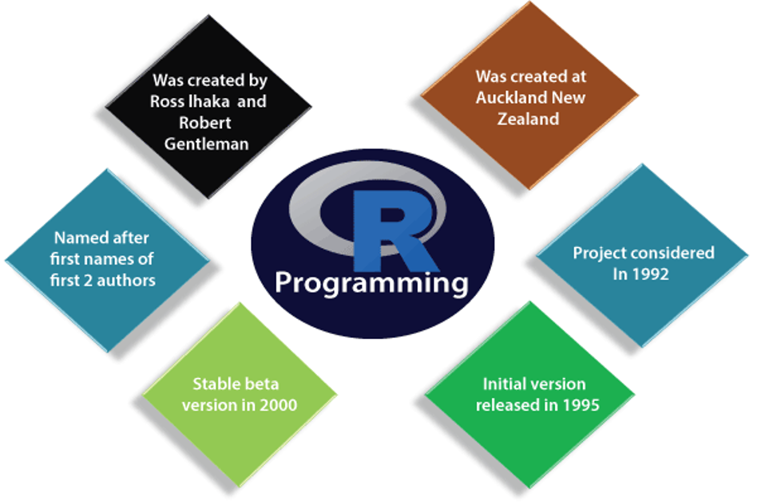
En este curso exploraremos los fundamentos teóricos y las aplicaciones prácticas de la ciencia de datos en R. Combinaremos material preparado con los problemas específicos de cada asistente, los cuales irán evolucionando día a día. El objetivo principal es que tanto aquellos con conocimientos básicos en ciencia de datos como aquellos con un nivel más avanzado puedan beneficiarse y llevar consigo nuevos aprendizajes al finalizar el curso.

En este curso no veremos ningún día modelizar (ya que hay un curso específico programado para ello en junio de este año), pero nos centraremos en la gestión de datos, visualización, trabajo en equipo y comunicación. ¡Esperamos que os sea de utilidad!
| Días de trabajo | Contenido |
|---|---|
Día 1. Introducción ¿Qué necesitamos? |
Introducción a la programación en R Conceptos básicos, tipos de datos, consejos básicos de programación y definición de objetivos |
Día 2. Organizando datos ¿Cómo lo organizamos? |
Tidyverse Importar, filtrar, seleccionar, transformar, unir y exportar datos Estructuras de programación |
Día 3. Visualización ¿Cómo lo mostramos? |
Introducción a ggplot2 Bases: gráficos por capas unidimensionales y bidimensionales Visualización avanzada: personalización y multipanel |
Día 4. Colaboración ¿Cómo trabajamos en equipo? |
Introducción y flujo en Git y GitHub Trabajos colaborativos |
Día 5
Informe en quarto donde presentéis un objetivo a conseguir y desgraneis la descripción de datos, manejo necesario y visualización objetivo a través de un repositorio de github compartido. Grupos de 2-3 personas.
9:00 a 11:00. Trabajo en grupo, resolver dudas.
11:30 a 14:00. Presentación en html generado a través de quarto de 5-7 minutos.
Dinámica del curso
Cada día combinaremos teoría con ejercicios. Idealmente, tendremos tiempo para que cada uno trabaje con sus propios datos. Todos los apuntes y ejercicios resueltos estarán disponibles en el repositorio de GitHub del curso.
¡así aprenderemos entre todos! 😉

❤️💜❤️💜 En el curso intentaremos dedicar al menos una hora al día a vuestros trabajos, por lo que debéis hacer grupos de dos-tres personas para programar. ❤️💜❤️💜
Antes de empezar. Estamos de acuerdo con el código ético y hacemos un ejemplo de este curso
Lee: https://www.contributor-covenant.org/version/2/0/code_of_conduct/ e información sacada de https://datasciencebox.org/
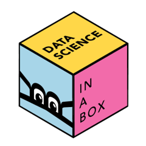
Usamos mucha bibliografía distinta para realizar este curso, pero os recomendamos los siguientes recursos:
Conceptos básicos de R (📝)
Consejos en la gestión de datos y programación (🧑🎓 )
Tipos de objetos, indexación y exploración básica de datos con R base vs. Tidyverse
🎯 R: lenguaje de programación dinámico (se interpreta el código en el momento que se ejecuta).
¿Podéis en parejas encontrar aspectos por lo que estéis de acuerdo o en desacuerdo con cadaafirmación? ¿por qué crees que es espacialmente importante usar R (u otro lenguaje de programación) en ciencia?
R es un lenguaje de programación para el análisis estadístico.
Cumple con los siguientes aspectos:
Código libre (gratuito)
Estado del arte
Flexible y potente
Portátil y replicable en otras plataformas
Ejemplos para “casi” cualquier análisis
Por y para la comunidad
RStudio es lo mismo que R
🎯 RStudio: entorno de desarrollo integrado para programar en R (IDE: Integrated Development Environemnt). Tiene cuatro zonas diferenciadas: el editor de código, la consola (donde se ejecuta el código), el navegador del espacio de trabajo (con el entorno –environment- y el historial de comandos) y el mix de abajo a la derecha (Archivos, Gráficos, Paquetes, Ayuda).
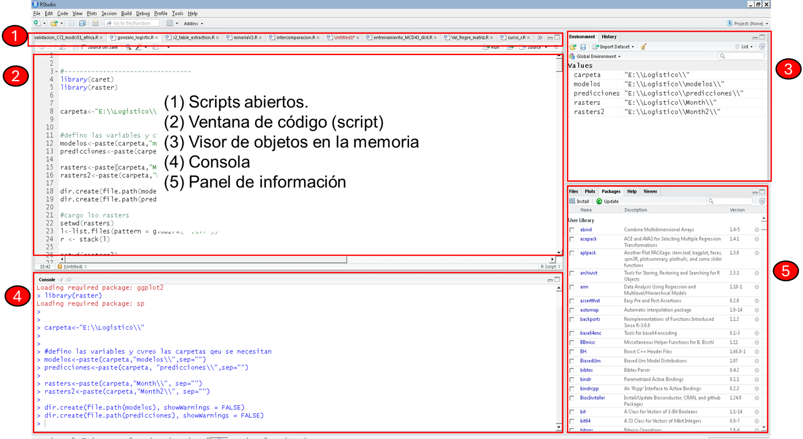
🎯 Objetos: cualquier elemento almacenado con un nombre específico. Pueden ser de muchos tipos: numeric, integer, logical, data.frame, SpatVector, etc.
El operador “:” genera un grupo de números enteros:
1:6[1] 1 2 3 4 5 6c(1, 2, 3, 4, 5, 6)[1] 1 2 3 4 5 6Ahora mismo hemos generado un grupo de seis número de enteros, pero no se han guardado en ningún sitio en la memoria del ordenador. Si quieres usar este vector de nuevo, debes guardarlo, creando un objeto en R, para ello debes usar la flecha de asignación <-.
mi_vector <- 1:6 #con la flecha de asignación lo guardo como un objeto R
mi_vector <- c(1, 2, 3, 4, 5, 6) #pero no lo tengo guardado en mi carpeta
str(mi_vector) #podemos ver la estructura del vector num [1:6] 1 2 3 4 5 6class(mi_vector)[1] "numeric"summary(mi_vector) #y unas estadisticas básicas Min. 1st Qu. Median Mean 3rd Qu. Max.
1.00 2.25 3.50 3.50 4.75 6.00 Un tipo de objeto con el que vamos a trabajar es un data.frame que es una tabla donde las filas son las observaciones y las columnas son las variables. En concreto, todos los días vamos a trabajar con la tabla de palmer_penguins.

| Los datos de palmer penguins fueron recopilados y puestos a disposición por la Dra. Kristen Gorman y la Estación Palmer, LTER de la Antártida, miembro de la Red de Investigación Ecológica a Largo Plazo. Datos de pinguinos adultos de tres especies diferentes y de tres islas diferentes e incluye informaci´n sonbre tamaño y sexo. |
library(palmerpenguins)Warning: package 'palmerpenguins' was built under R version 4.3.3library(tidyverse)Warning: package 'tidyverse' was built under R version 4.3.3Warning: package 'tidyr' was built under R version 4.3.3Warning: package 'readr' was built under R version 4.3.3Warning: package 'stringr' was built under R version 4.3.3── Attaching core tidyverse packages ──────────────────────── tidyverse 2.0.0 ──
✔ dplyr 1.1.3 ✔ readr 2.1.5
✔ forcats 1.0.0 ✔ stringr 1.5.1
✔ ggplot2 4.0.0 ✔ tibble 3.2.1
✔ lubridate 1.9.2 ✔ tidyr 1.3.1
✔ purrr 1.0.2
── Conflicts ────────────────────────────────────────── tidyverse_conflicts() ──
✖ dplyr::filter() masks stats::filter()
✖ dplyr::lag() masks stats::lag()
ℹ Use the conflicted package (<http://conflicted.r-lib.org/>) to force all conflicts to become errorsdata(penguins)
str(penguins) #permite ver la estructura de los datostibble [344 × 8] (S3: tbl_df/tbl/data.frame)
$ species : Factor w/ 3 levels "Adelie","Chinstrap",..: 1 1 1 1 1 1 1 1 1 1 ...
$ island : Factor w/ 3 levels "Biscoe","Dream",..: 3 3 3 3 3 3 3 3 3 3 ...
$ bill_length_mm : num [1:344] 39.1 39.5 40.3 NA 36.7 39.3 38.9 39.2 34.1 42 ...
$ bill_depth_mm : num [1:344] 18.7 17.4 18 NA 19.3 20.6 17.8 19.6 18.1 20.2 ...
$ flipper_length_mm: int [1:344] 181 186 195 NA 193 190 181 195 193 190 ...
$ body_mass_g : int [1:344] 3750 3800 3250 NA 3450 3650 3625 4675 3475 4250 ...
$ sex : Factor w/ 2 levels "female","male": 2 1 1 NA 1 2 1 2 NA NA ...
$ year : int [1:344] 2007 2007 2007 2007 2007 2007 2007 2007 2007 2007 ...glimpse(penguins) #permite ver la estructura de los datos, más organizadaRows: 344
Columns: 8
$ species <fct> Adelie, Adelie, Adelie, Adelie, Adelie, Adelie, Adel…
$ island <fct> Torgersen, Torgersen, Torgersen, Torgersen, Torgerse…
$ bill_length_mm <dbl> 39.1, 39.5, 40.3, NA, 36.7, 39.3, 38.9, 39.2, 34.1, …
$ bill_depth_mm <dbl> 18.7, 17.4, 18.0, NA, 19.3, 20.6, 17.8, 19.6, 18.1, …
$ flipper_length_mm <int> 181, 186, 195, NA, 193, 190, 181, 195, 193, 190, 186…
$ body_mass_g <int> 3750, 3800, 3250, NA, 3450, 3650, 3625, 4675, 3475, …
$ sex <fct> male, female, female, NA, female, male, female, male…
$ year <int> 2007, 2007, 2007, 2007, 2007, 2007, 2007, 2007, 2007…summary(penguins) species island bill_length_mm bill_depth_mm
Adelie :152 Biscoe :168 Min. :32.10 Min. :13.10
Chinstrap: 68 Dream :124 1st Qu.:39.23 1st Qu.:15.60
Gentoo :124 Torgersen: 52 Median :44.45 Median :17.30
Mean :43.92 Mean :17.15
3rd Qu.:48.50 3rd Qu.:18.70
Max. :59.60 Max. :21.50
NA's :2 NA's :2
flipper_length_mm body_mass_g sex year
Min. :172.0 Min. :2700 female:165 Min. :2007
1st Qu.:190.0 1st Qu.:3550 male :168 1st Qu.:2007
Median :197.0 Median :4050 NA's : 11 Median :2008
Mean :200.9 Mean :4202 Mean :2008
3rd Qu.:213.0 3rd Qu.:4750 3rd Qu.:2009
Max. :231.0 Max. :6300 Max. :2009
NA's :2 NA's :2 🎯 Funciones: objetos de R que toman un vector de entrada y dan como resultado otro vector haciendo una acción concreta (funcionalidad específica). Son los bloques de construcción fundamentales en cualquier script de R que es un lenguaje funcional.
Las funciones usan argumentos, y generalmente tienen elementos de entrada y salida que se transforman de una manera específica.
Los paquetes o librerias contienen funciones reutilizables, documentación sobre cómo usarlas y datos de ejemplo. Son las unidades fundamentales de código reproducible en R. La primera vez que necesitas un paquete o librería lo instalas, la segunda lo cargas en tu sesión de trabajo, con las funciones install.packages(), library().
Para comprender la programación en R, resultan útiles dos lemas:
- Todo lo que existe es un objeto.
- Todo lo que sucede es una llamada a función.
— John Chambers (Advanced R)
El directorio de trabajo es la carpeta de nuestro ordenador donde estamos trabajando. El script es el archivo básico que almacena código de R de nuestra sesión de trabajo.
¡En este curso debes usar las TECLAS RÁPIDAS para programar!
getwd() # saber directorio de trabajo
setwd("C:/Users/uah/OneDrive - Universidad de Alcala/GitHub_Projects/ciencia_datos_uah") # ojo con la ruta / o \\ℹ️ Información importante
Cuando ejecutes un comando en RStudio, recuerda que el resultado aparece inmediatamente en la consola.
No es recomendable establecer el directorio de trabajo manualmente porque el trabajo deja de ser reproducible. Es mejor crear desde el principio un proyecto en R ligado a un directorio relativo que contenga todos los datos de entrada, los scripts y los resultados del script. Al abrir el proyecto, se sincroniza con pestaña Files.
💡Para crear un proyecto: Archivo > Nuevo proyecto.
Crea un proyecto para el Curso: proyecto_doctorado_UAH_R y un proyecto del cuaderno de clase cuaderno_doctorado_UAH_R Una vez creado genera una carpeta de “scripts” y una de “resultados”. Revisa en tu panel de Rstudio a la derecha, abajo, que archivos tienes. ¿Cómo has nombrado tu archivo de trabajo actual? ¡Revisa y cambia el nombre al final de la sesión!
Normalmente, para trabajar adecuadamente debemos organizar las carpetas y los nombres de los archivos con los que trabajamos ¿Cómo lo hacéis habitualmente?
Además de un archivo “.README” que explique la organización del trabajo, podéis especificar archivos de entrada, salida, scripts o procesos.
Utiliza comentarios para guiar al lector con #, acordarte por qué hiciste un determinado código, o ayudar a otra persona a entender tu código sin necesitar que tu se lo expliques (o a ti mismo dentro de un tiempo…) ¡un código buen comentado te ahorrará mucho tiempo!
💡Para ejecutar una línea de código usa el comando: Ctrl + Enter (Ctrl + R)
¡No tienes que seleccionar con el ratón la línea de ejecutar y darle a “Run”! con las techas de más arriba e incluso shift te ahorrara tiempo!
Dentro de los paquetes puedes pedir ayuda de multiples maneras.
# install.packages("tidyverse", dep = T) # dep = T significa instalar dependencias
library(tidyverse)
install.packages(c("swirl", "swirlify"))
library(swirlify)¿puedes buscar ayuda sobre qué es el paquete tidyverse y qué hace? ¿puedes buscar ayuda sobre la función “select”?
?tidyverse?selectAprende sobre reproducibilidad, ya que es clave y fundamental en ciencia. Lee el siguiente enlace y discute
¿es realmente todo lo que haces reproducible? ¿haces algún aspecto del proceso de publicación reproducible?
¿sabes identificar por qué?
¿que ventajas y desventajas tiene hacerlo reproducible?
Discutelo en parejas.
Aquí os dejamos algunas de las ventajas de la reproducibildiad y porqué debe implementarse en los equipos de trabajo.

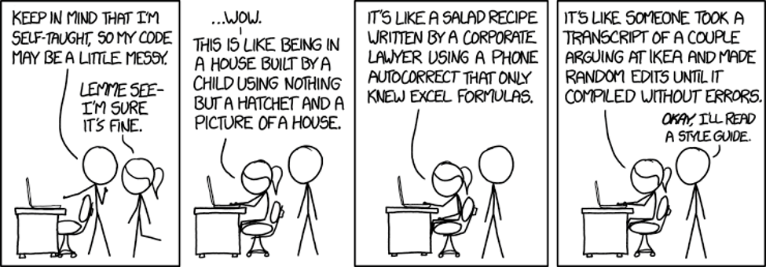
Al asignar un nombre a un objeto podemos llamarlos siempre que necesitemos a lo largo del script. No es necesario guardar (exportar) la mayoría de los objetos que tenemos en el entorno de trabajo de R a nuestro ordenador, lo importante es conservar el script con el que se generan.
¿Es lo mismo nombrar a un objeto “x” o “X”?¿Crees que te puede dar problemas en el código nombrar variables con mayúsculas y minúsculas? Para verlo, nombra dos objetos
x <- 4.5
X <- "objeto" # si el objeto contiene letras, usar comillas
class(x) # función para ver de que clase es nuestro objeto [1] "numeric"📝R es sensible a las mayúsculas. Mejor no usarlas.
📝Los nombre de los objetos deben ser descriptivos y no deben contener símbolos especiales. Es mejor usar nombres largos pero descriptivos, que cortos o sin sentido. Excepción: para archivos temporales yo generalmente uso “kk” que me recuerda a recordar que este archivo es temporal y prescindible…

Hay dos cosas difíciles en la Ciencia de Computación:
- Invalidar cachés.
- Poner nombres a cosas
— Phil Carton
📝Usa nombre memorables y correctos para tus variables:
✅ Siempre empiezan por letras (en el caso de objetos)
✅ Solo pueden contener letras, numeros, “_” y “.”.
✅ Los nombres deben ser legibles por máquinas: No uses espacios, caracteres especiales o palabras reservadas.: (^, !, $, @, +, -, /, *).
✅ Usa minúsculas separadas por “_”
✅ Los nombres deben ser legibles para humanos: describen lo que continene. Para variables usa nombres y para funciones verbos.
✅ Evita el uso de nombres comunes Object names must start with a letter and can only contain letters, numbers, _, and ..
💡 Numerar los scripts e incluso las salidas (tablas, figuras, etc.) ayuda a simplificar el orden y trabajar comodamente mediante proyectos.
Lee la guía de estilo de tidyverse (con la que trabajaremos en el curso):
Sección 2.2.: https://r4ds.hadley.nz/workflow-style.html
Sección 4.1. y 4.2.: https://style.tidyverse.org/syntax.html
Revisa cómo nombras a las tablas y las variables con las que trabajas:
¿siguen un buen estilo a la hora de nombrarlas?
¿trabajas en proyectos y tienes todo ordenado adecuadamente?
En R, el código que tecleas se llama comando. La interfaz de Rstudio es sencilla, cuando en el prompt de la consola de RStudio ejecutas una línea de comando da instrucciones al ordenador para hacer la operación escrita. Puedes usar R como una calculadora, usando operadores matemáticos, relacionales o lógicos, que son:
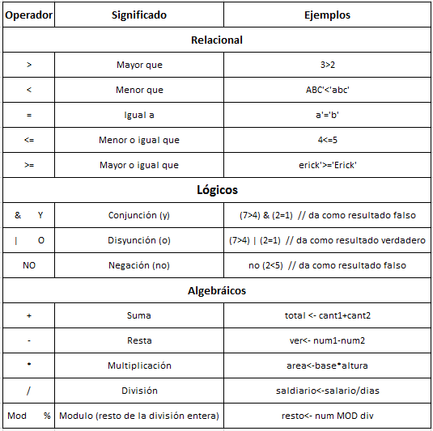
🎯 Un vector es la estructura de datos más simple en R. Es una colección de uno o más elementos del mismo tipo (números, texto o valores lógicos).
¿Qué tipos de datos puede contener un vector?
Si tu dato es numerico, puede ser discreto (int) o continue (num)
🧠 ¿Existe algún otro tipo de dato númerico?
⚠️ ¿son todos los tipos de datos categóricos iguales?
usar funciones básicas como mean(), min(), max().
🎯 Las matrices son datos bidimensionales que contienen datos del mismo tipo.
🎯 Una lista puede contener objetos heterogéneos: vectores, matrices, data.frames, modelos, etc.
🎯 Un data.frame es una tabla (2D) donde cada columna puede ser de distinto tipo. Es la estructura más usada para análisis y la que normalmente acompaña a una capa espacial (atributos).
Cuando trabajamos con un data.frame o cualquier otro objeto, lo primero que debemos conocer es su estructura: número de observaciones o filas, número de columnas o variables, tipo de dato (númerico o carácter, y de qué tipo).
Lo siguiente que debemos conocer son las características básicas ¿conoces tus datos?. Intenta si puedes reponder a estas preguntas básicas de la variable de interés:
¿medidas de centralidad (e.g. media, moda, mediana)?
¿y medidas de dispersión (rangos, percentiles, valores anómales, desviación estandar y error estándar?
¿varian por ciertos niveles del factor (e.g. ¿especie de pingüino?).
¿Tienes ceros o valores nulos entus datos? ¿Por qué?
Realiza las estadísticas básicas de los datos de penguins con summary. Selecciona una variable, por ejemplo, la longitud del pico y genera un nuevo vector donde reemplaces tres datos por valores extremos.
¿Es la media suficiente para conocer la distribución de los datos? ¿qué información te dan los extremos?
¿Qué gráficos básicos existen para conocer la centralidad y la variabilidad de los datos? Si hacéis el curso de estadística esto lo llamamos Exploración Básica de Datos y es la base central de caulquier análisis, que requieren de una buena base teórica y una buena exploración y conocimiento de los datos.

Rbase es el paquete que viene en R por defecto, mientras que tidyverse es un conjunto de paquetes de R para ciencia de datos. Todos los paquetes tienen una misma estructura (filosofía, gramática y estructura de datos).
Se basa en los siguientes principios:
Centrado en humanos: tiene un diseño intuitivo que facilita su uso y accesibilidad para el usuario
Consistencia: todos los paquetes están diseñados para trabajar con datos ordenados (“Tidy Data”), y las funciones de los paquetes tienen una nomenclatura común y congruente. Esto permite que un usuario que aprende sobre una función o paquete pueda aplicar ese conocimiento a otros, facilitando así la tarea de recordar y deducir código de manera más sencilla.
Componiblidad: permite al usuario resolver problemas complejos dividiéndolos en pequeñas partes, que pueden combinarse utilizando el operador “pipe” (%>% or |>).
Inclusividad: no se trata sólo de la colección de paquetes, sino también la comunidad de personas que los usan, basándose en la ayuda entre usuarios y generando un ambiente inclusivo.
💡 Cuando trabajamos con datos tipo “data.frame” fila es una observación” y cada columna es una “variable. Esto parece sencillo, pero ¿realmente ocurre así? primero asegurate de la estructura de tus datos, que la comprendes e intenta trabajar con tidy data.
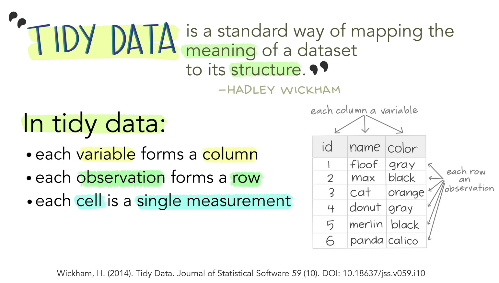
Esto facilita el análisis, la manipulación y la visualización de datos. Esto lo explican muy bien con una serie de ilustraciones Julia Lowndes y Allison Horst en “Tidy data for efficiency, reproducibility, and collaboration”
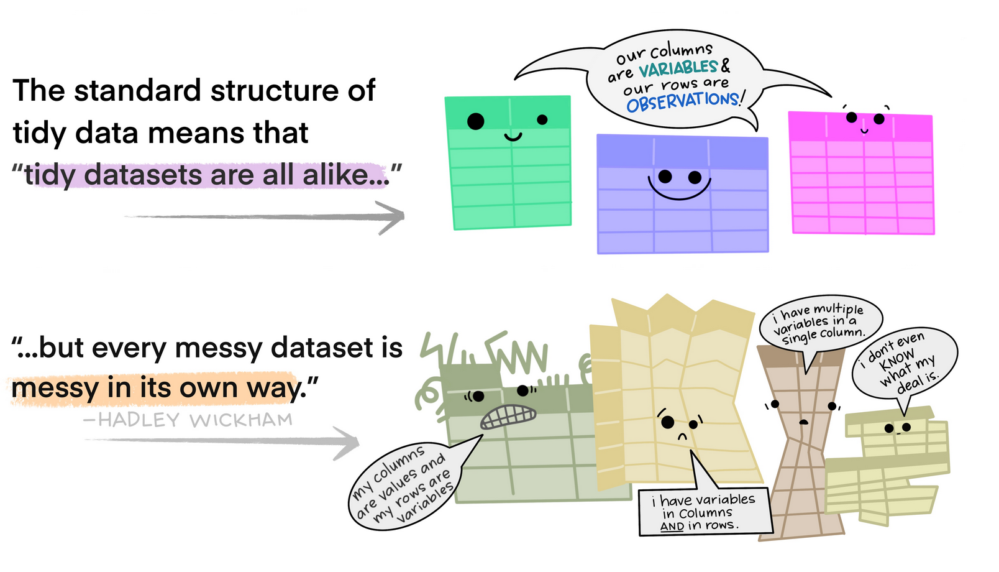
Usando este estándar se consigue que todos los set de datos tengan la misma estructura.
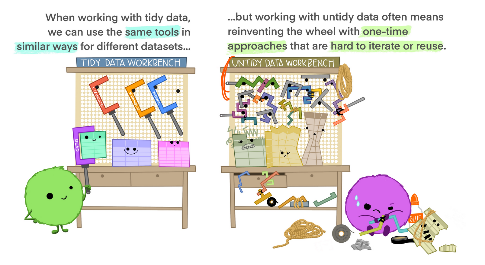
Trabajar con tidy data es más eficiente, permite la colaboración, la reproducibilidad y la reutilización de código.
📝 En esta sección vamos a comparar dos operaciones muy comunes en manipulación de datos, además de hacer estadisticas básicas
select() para elegir columnasfilter() para elegir filasPrimero veremos cómo se hacen en base R y luego con el tidyverse. Usaremos el dataset incorporado en R llamado penguins,
Nuestro objetivo: seleccionar la especie que tiene un mayor peso corporal para los machos. Para lo que:
Conocemos los datos
Seleccionamos variables de interés
Filtramos los machos
Los colocamos en orden descendiente
Mostramos los resultados: nuestro primer gráfico
#### readr (read rectangular data) ####
str(penguins) tibble [344 × 8] (S3: tbl_df/tbl/data.frame)
$ species : Factor w/ 3 levels "Adelie","Chinstrap",..: 1 1 1 1 1 1 1 1 1 1 ...
$ island : Factor w/ 3 levels "Biscoe","Dream",..: 3 3 3 3 3 3 3 3 3 3 ...
$ bill_length_mm : num [1:344] 39.1 39.5 40.3 NA 36.7 39.3 38.9 39.2 34.1 42 ...
$ bill_depth_mm : num [1:344] 18.7 17.4 18 NA 19.3 20.6 17.8 19.6 18.1 20.2 ...
$ flipper_length_mm: int [1:344] 181 186 195 NA 193 190 181 195 193 190 ...
$ body_mass_g : int [1:344] 3750 3800 3250 NA 3450 3650 3625 4675 3475 4250 ...
$ sex : Factor w/ 2 levels "female","male": 2 1 1 NA 1 2 1 2 NA NA ...
$ year : int [1:344] 2007 2007 2007 2007 2007 2007 2007 2007 2007 2007 ...glimpse(penguins) Rows: 344
Columns: 8
$ species <fct> Adelie, Adelie, Adelie, Adelie, Adelie, Adelie, Adel…
$ island <fct> Torgersen, Torgersen, Torgersen, Torgersen, Torgerse…
$ bill_length_mm <dbl> 39.1, 39.5, 40.3, NA, 36.7, 39.3, 38.9, 39.2, 34.1, …
$ bill_depth_mm <dbl> 18.7, 17.4, 18.0, NA, 19.3, 20.6, 17.8, 19.6, 18.1, …
$ flipper_length_mm <int> 181, 186, 195, NA, 193, 190, 181, 195, 193, 190, 186…
$ body_mass_g <int> 3750, 3800, 3250, NA, 3450, 3650, 3625, 4675, 3475, …
$ sex <fct> male, female, female, NA, female, male, female, male…
$ year <int> 2007, 2007, 2007, 2007, 2007, 2007, 2007, 2007, 2007…head(penguins) # A tibble: 6 × 8
species island bill_length_mm bill_depth_mm flipper_length_mm body_mass_g
<fct> <fct> <dbl> <dbl> <int> <int>
1 Adelie Torgersen 39.1 18.7 181 3750
2 Adelie Torgersen 39.5 17.4 186 3800
3 Adelie Torgersen 40.3 18 195 3250
4 Adelie Torgersen NA NA NA NA
5 Adelie Torgersen 36.7 19.3 193 3450
6 Adelie Torgersen 39.3 20.6 190 3650
# ℹ 2 more variables: sex <fct>, year <int>tail(penguins) # A tibble: 6 × 8
species island bill_length_mm bill_depth_mm flipper_length_mm body_mass_g
<fct> <fct> <dbl> <dbl> <int> <int>
1 Chinstrap Dream 45.7 17 195 3650
2 Chinstrap Dream 55.8 19.8 207 4000
3 Chinstrap Dream 43.5 18.1 202 3400
4 Chinstrap Dream 49.6 18.2 193 3775
5 Chinstrap Dream 50.8 19 210 4100
6 Chinstrap Dream 50.2 18.7 198 3775
# ℹ 2 more variables: sex <fct>, year <int>summary(penguins) species island bill_length_mm bill_depth_mm
Adelie :152 Biscoe :168 Min. :32.10 Min. :13.10
Chinstrap: 68 Dream :124 1st Qu.:39.23 1st Qu.:15.60
Gentoo :124 Torgersen: 52 Median :44.45 Median :17.30
Mean :43.92 Mean :17.15
3rd Qu.:48.50 3rd Qu.:18.70
Max. :59.60 Max. :21.50
NA's :2 NA's :2
flipper_length_mm body_mass_g sex year
Min. :172.0 Min. :2700 female:165 Min. :2007
1st Qu.:190.0 1st Qu.:3550 male :168 1st Qu.:2007
Median :197.0 Median :4050 NA's : 11 Median :2008
Mean :200.9 Mean :4202 Mean :2008
3rd Qu.:213.0 3rd Qu.:4750 3rd Qu.:2009
Max. :231.0 Max. :6300 Max. :2009
NA's :2 NA's :2 names(penguins) [1] "species" "island" "bill_length_mm"
[4] "bill_depth_mm" "flipper_length_mm" "body_mass_g"
[7] "sex" "year" dim(penguins) [1] 344 8nrow(penguins) [1] 344ncol(penguins) [1] 8Piensa y escribe en una línea qué hace cada función y discutelo con el compañero. ¿Hay algún dato extraño? ¿Hay que tomar alguna decisión?
body_mass_g (peso corporal) y species (especie), además del sex (género).penguins_rbase1 <- penguins[, c("species", "body_mass_g", "sex")]
penguins_rbase2 <- penguins[, c(1, 6, 7)]select())penguins_tidy <- penguins |>
select(species, body_mass_g, sex)Para comprender lo que hacemos tenemos que usar la pipa:
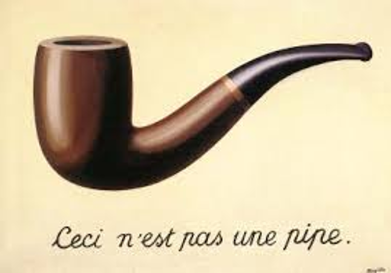
no hace más que lo siguiente, pero ayuda a mucho a comprender y sintetizar código, porque ¿en qué sentido hablamos los humanos?
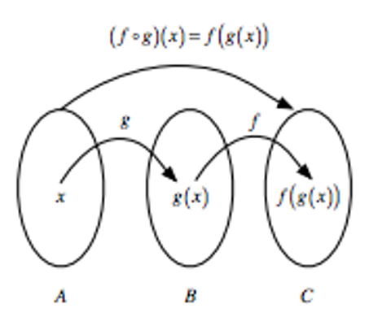
Diferencias entre Rbase y tidyverse. ¿Qué es más sencillo de entender? ¿y más reproducible de las tres opciones que hemos visto?
Queremos quedarnos solo con los machos
select_penguins_filtrado <- penguins_rbase1[penguins_rbase1$sex == "male", ]filter())select_penguins_filtrado <- filter(penguins_rbase1, sex == "male")
select_penguins_filtrado <- penguins_rbase1 |>
filter(sex == "male")penguins_male_body_kg <- penguins |>
select(species, body_mass_g, sex) |>
filter(sex == "male") |>
mutate(body_mass_kg = body_mass_g / 1000)|>
arrange(body_mass_kg) 👉 Ventajas: más intuitivo, cada paso es claro y en “lenguaje natural”. 👉 Inconvenientes: requiere instalar/cargar dplyr.
#sin pipa
penguins_rbase1 <- penguins[penguins_rbase1$sex == "male", c("species", "body_mass_g", "sex")]
penguins_rbase1$body_mass_kg <- penguins_rbase1$body_mass_g / 1000
penguins_sorted <- penguins_rbase1[order(penguins_rbase1$body_mass_kg), ]👉 Ventajas: usa solo R base, no necesita librerías adicionales. 👉 Inconvenientes: la sintaxis es más dificil para alumnos principiantes, menos legible.
Gráfico base R
plot(penguins_male_body_kg$species, penguins_male_body_kg$body_mass_kg,
main = "",
xlab = "species",
ylab = "body mass (kg)",
pch = 19, col = "blue")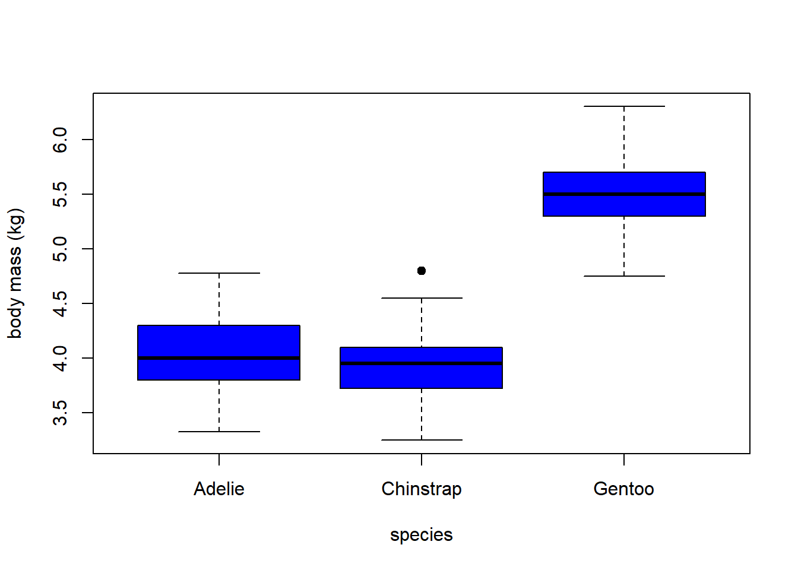
Gráfico con ggplot2, paquete de gráficos de tidyverse
ggplot(penguins_male_body_kg, aes(x = species, y = body_mass_kg)) +
geom_boxplot(color = "darkred", size = 0.5) +
labs(title = "body mass ~ species (tidyverse)",
x = "species",
y = "body mass (kg)") +
theme_minimal()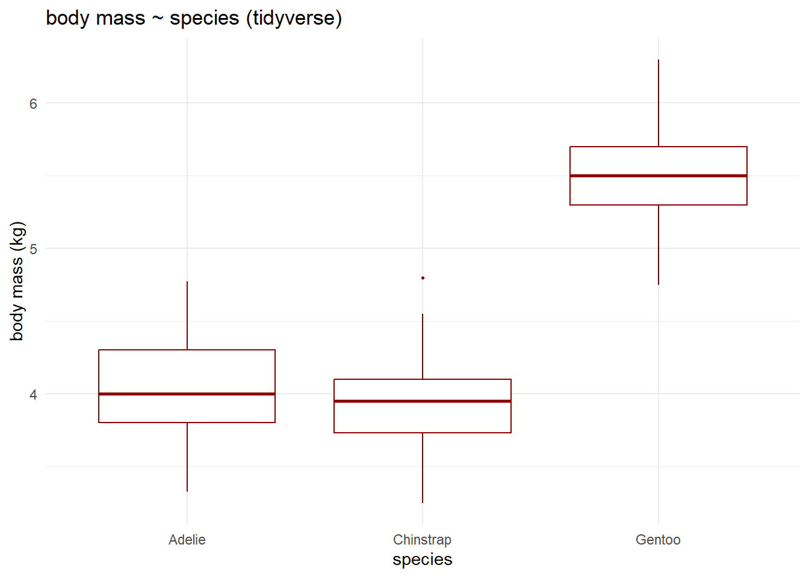
Ahora es vuestro turno 💡, practica la seleccion y filtrado con la pipa.
bill_length_mm y bill_depth_mm de penguins usando tanto base R como tidyverse.
Piensa en el modelo de ciencia de datos que hemos visto al principio del día:
Plantea el objetivo de vuestro trabajo
¿qué variables usáis y como son vuestros datos?
¿puedes describir el data.frame que impartas y responder a las siguientes preguntas?:
¿Son vuestros datos tidy? ¿Qué representa cada fila y qué cada columna? Especifica el número de filas y columnas. Ten claro y documenta cómo has llegado a ello, siempre es recomendable tener unos metadatos con una descripción de los datos, obtención, fuentes y unidades.
¿Qué tipo de datos y caracteristicas tiene cada columna? Revisa para las numericas las medidas de centralidad y de dispersión: ¿tienen sentido los valores? ¿tienes datos anomalos? ¿tienes muchos ceros o NAs y que significan?
Revisa el tipo de datos tipo caracter que que significan, ¿son de tipo nominal, ordinal o binario?¿puedes comprobar los niveles de las variables seleccionadas?
Revisa que tipo de gráfico te gustaría visualizar al terminar el curso. Mañana veréis las operaciones que podéis / tenéis que realizar para ello, y el miércoles cómo realizar la visualización, pero es conveneinte que tengáis una idea de QUÉ QUEREIS HACER, y es muy importante saberlo ANTES de programar.